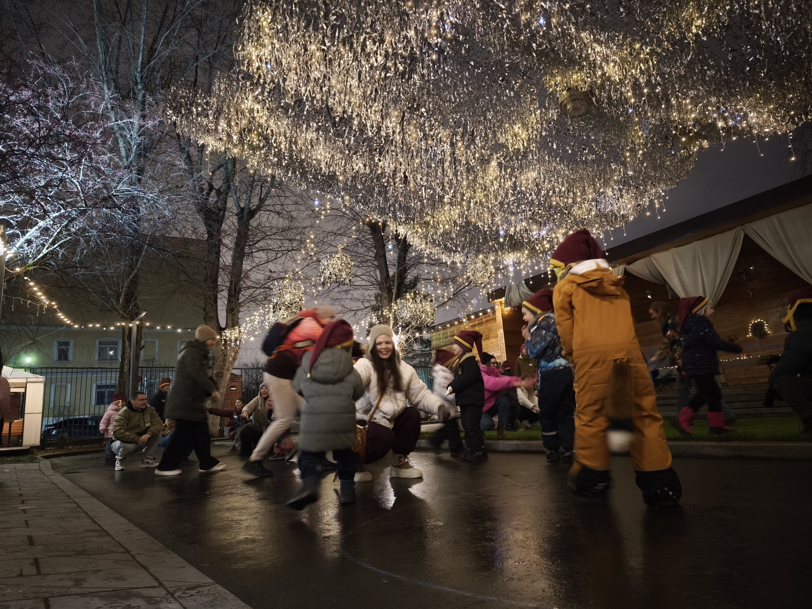
Играем вместе
Знакомимся, играем и собираем цвета радуги. В заданиях дети помогают гномам и друг другу — каждый становится частью команды.
Сказочное приключение для детей 4–9 лет. Игры на свежем воздухе, сказка и мастерская, вкусняшки у костра и подарок.
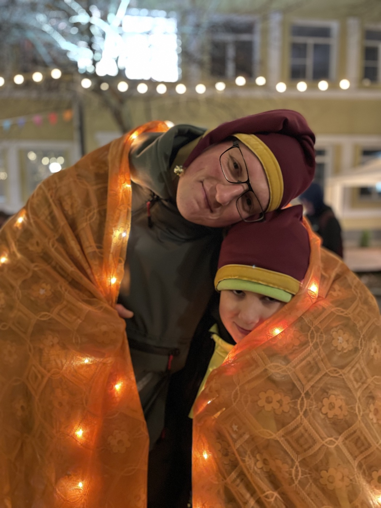
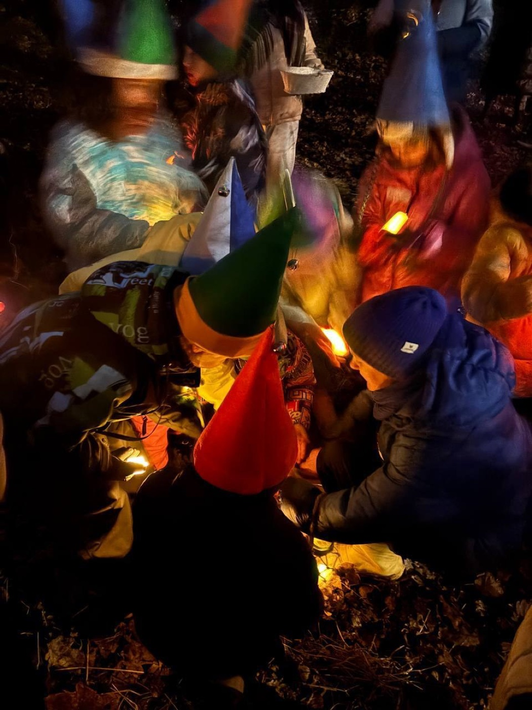
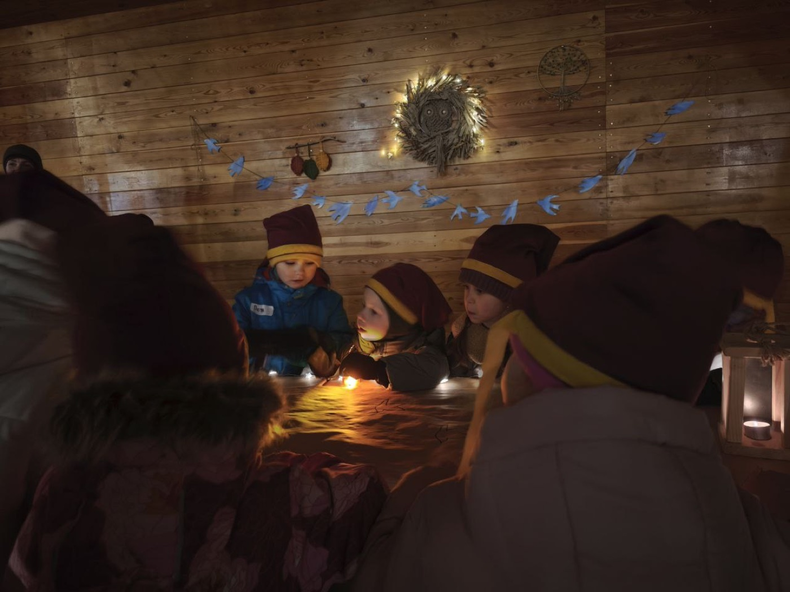
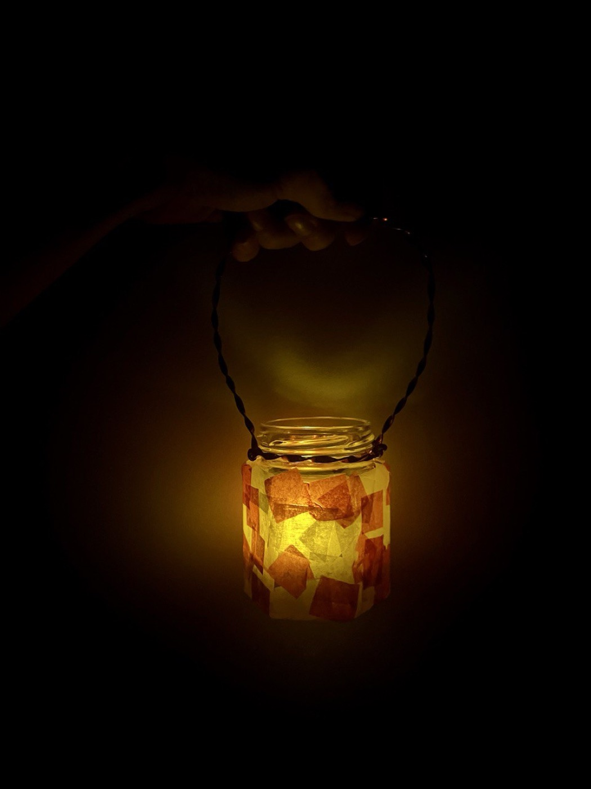
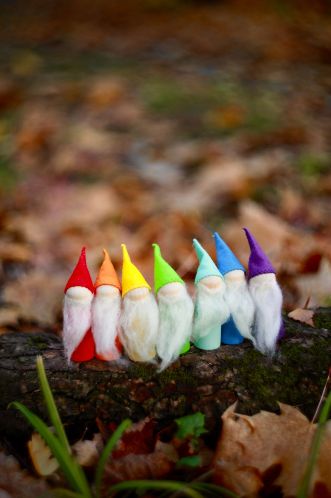
Темный прохладный вечер. Но вокруг загораются огни и звучит музыка. Мы пойдем на помощь гномам, которые готовят лес к зиме, и поможем им сохранить самое необычное — цвета радуги.

Знакомимся, играем и собираем цвета радуги. В заданиях дети помогают гномам и друг другу — каждый становится частью команды.
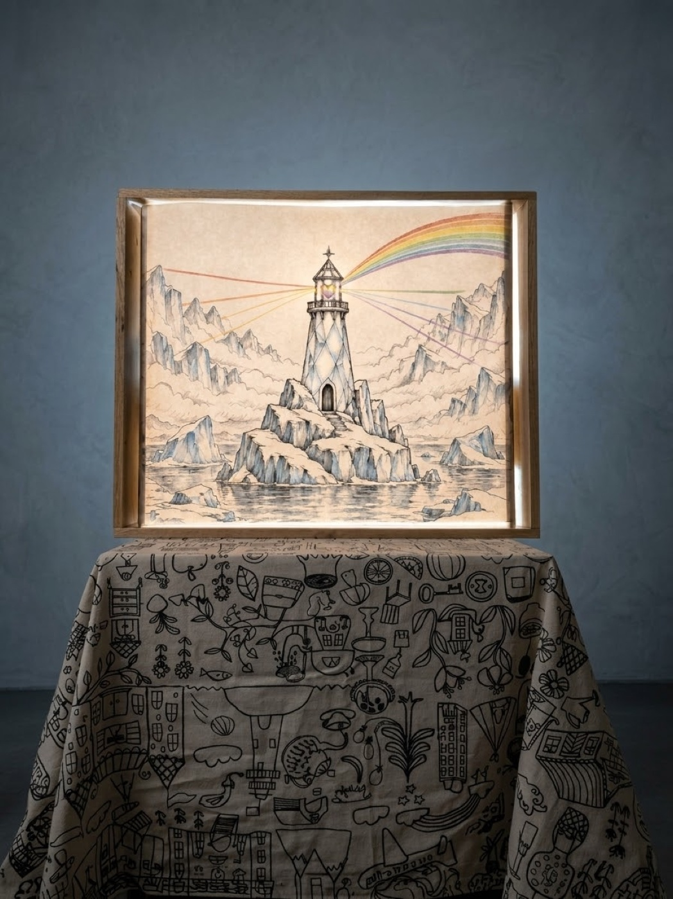
Покажем добрую световую сказку, которая оставит след в сердцах детей.
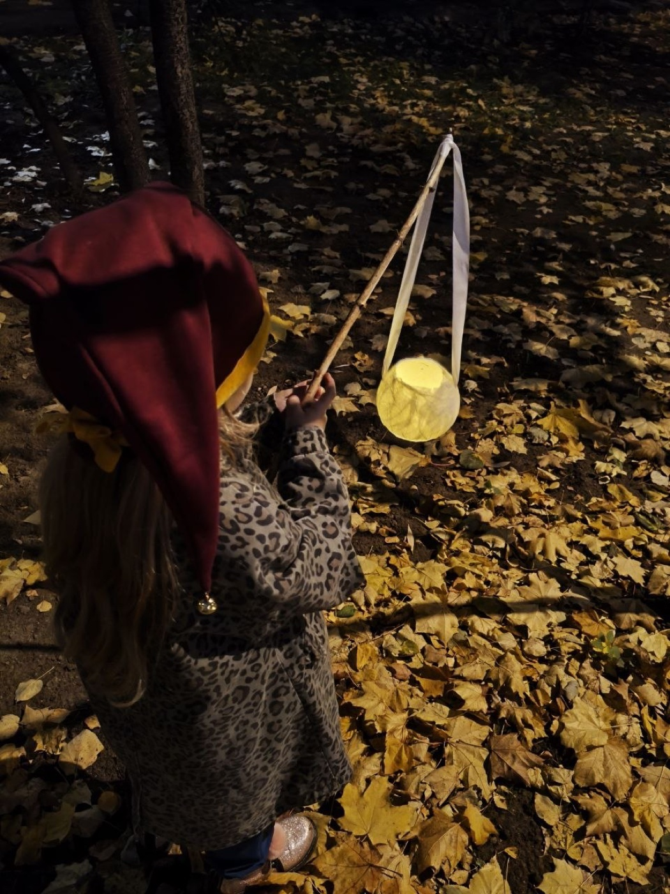
Каждый ребенок сделает свой фонарик и заберет его домой как напоминание об этом чудесном вечере.
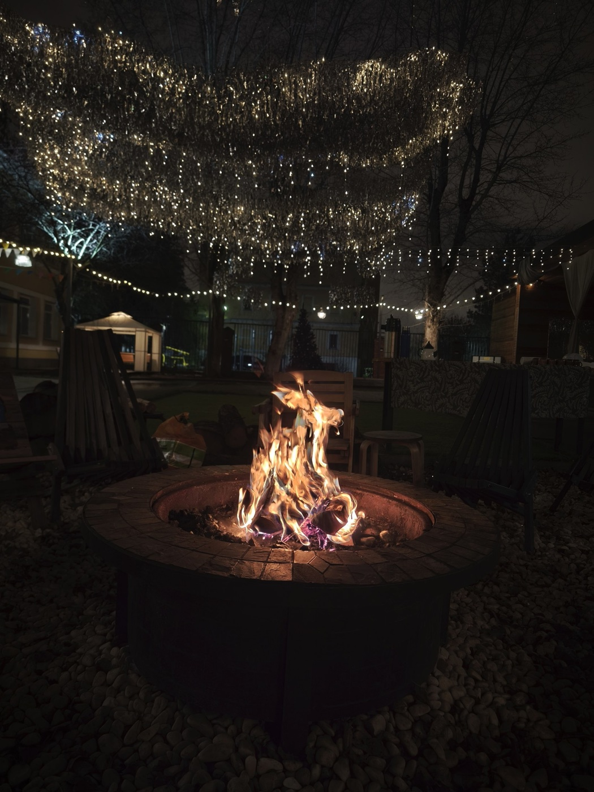
Теплый и яркий костер, горячий напиток и домашнее печенье. Иногда самое волшебное — просто побыть вместе.
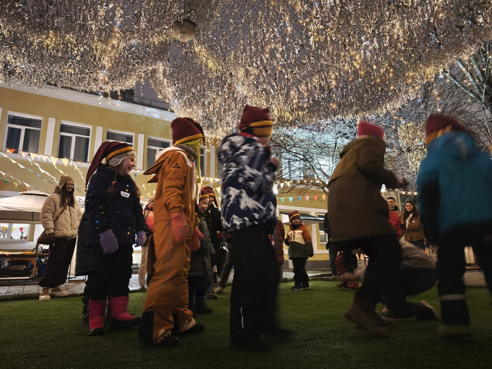
«И дети, и бабушка под впечатлением! Старшая доделывает гномиков, младшая бегает в колпаке с фонариком, поддерживают волшебно-праздничное настроение. Бабушке очень понравилось погружение в добрую сказку, и то, с какой душевной теплотой было проведено мероприятие».
«…а какой кайф просто посидеть у костра и попить глинтвейн безалкогольный, всё прошло на ура! Низкий поклон за подаренные эмоции и время».
«И каждый вышел не перегруженным, не перевозбуждённым, как это часто бывает. Вдохновлённые — очень подходящее слово».
«Мы с детьми сходили на одно из самых приятных, творческих и теплых мероприятий для детей и взрослых (да, взрослые тоже там играют и мне очень понравилось)».
«Спасибо вам большое, что делаете серые будни ярче. Сама идея, антураж и отношение к деткам очень ценны. Спасибо за ваш труд и сказку, привнесённую в нашу жизнь».
«Настя в полном восторге. Ждет первый снег, впечатлений масса, рассказывает очень много, не умолкая, рада была видеть друзей. Колпак и камушек носит, даже в школу. Так все интересно и сказочно получилось».
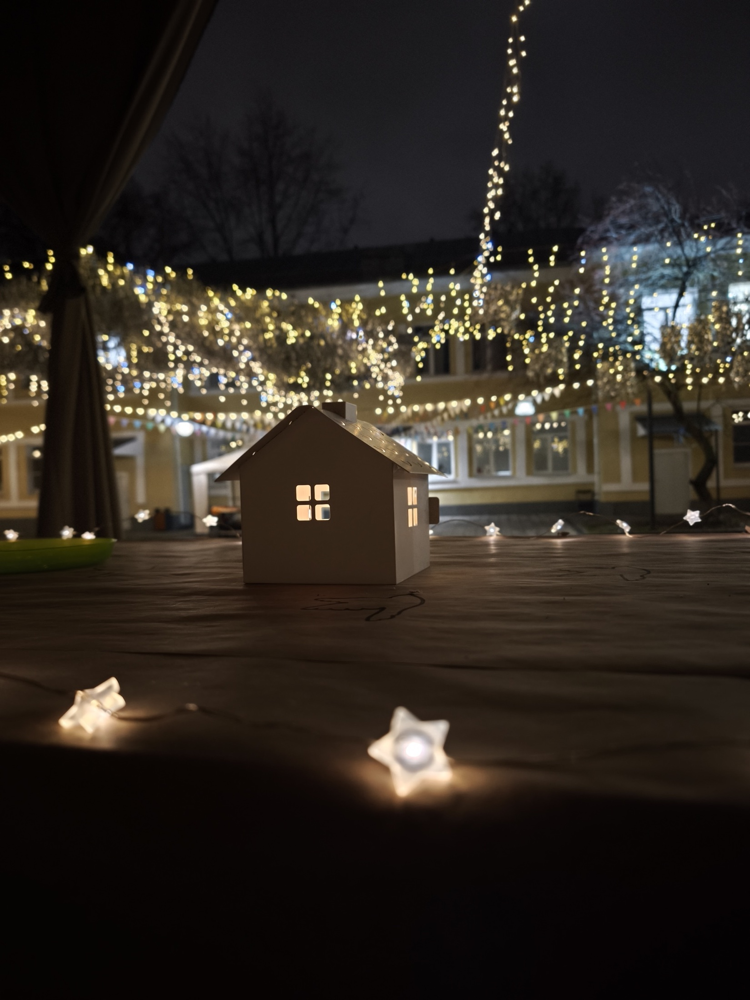
У каждого из нас внутри есть такой необходимый в это тёмное время года огонь. Мы почувствуем его тепло. А подарок и колпак будут напоминать детям об ощущении волшебства и доброты.
Мы создаём праздники со смыслом. С любовью и вниманием к каждому. С добротой и теплом.
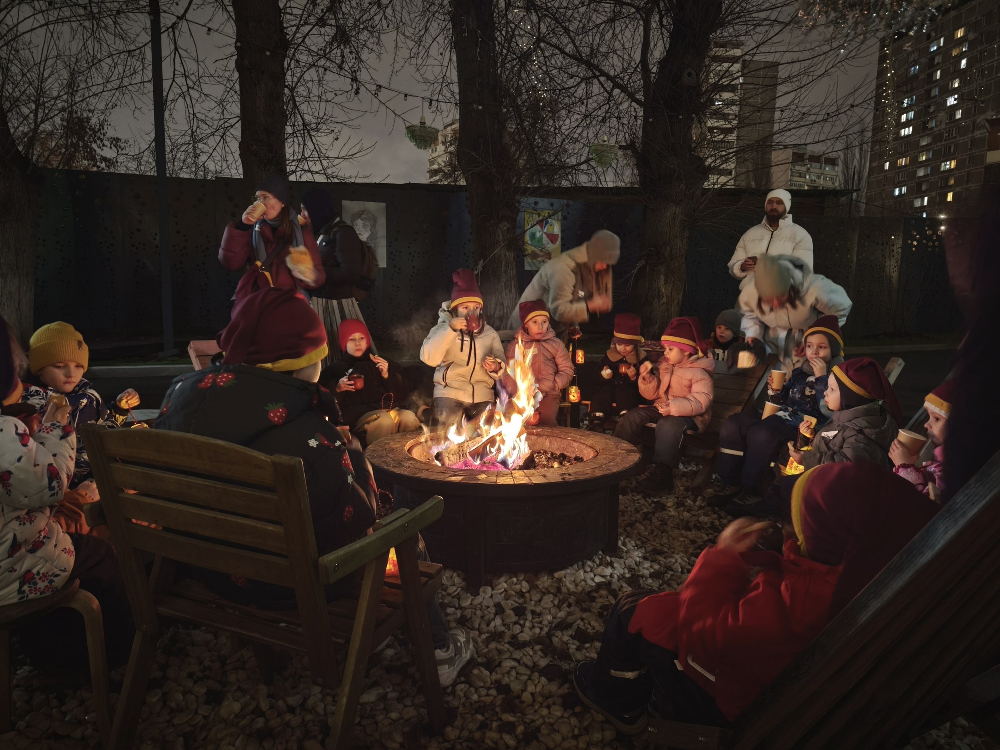